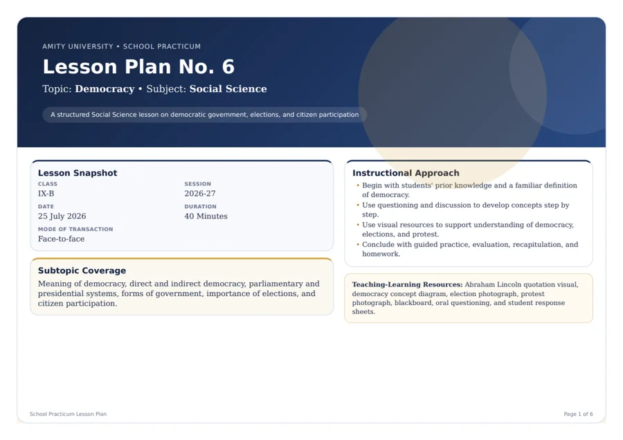

Lesson plan
Democracy · Lesson Plan No. 6
25 July 2026
A 40-minute school-practicum plan covering democratic government, elections and citizen participation through questioning, visuals, discussion and written practice.
Planning evidence